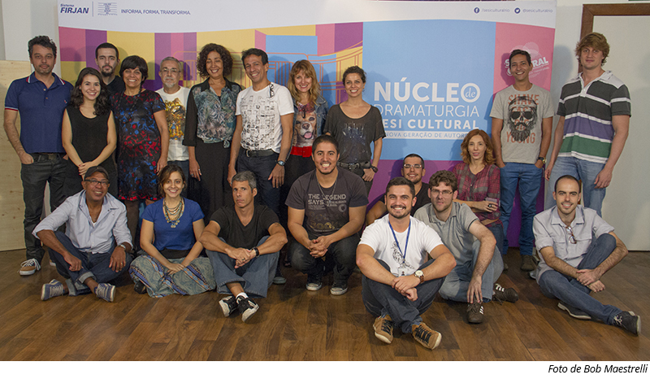

PRIMEIRA TURMA (2014 - 2015)
A primeira turma (2014-2015) contou com 18 participantes e foi orientada pelos por Carla Faour e Henrique Tavares. Cada um dos autores participantes desenvolveu uma dramaturgia inédita e, após um processo de avaliação, três dramaturgias foram publicadas em um livro. Das três dramaturgias, “Vende-se uma Geladeira Azul”, escrita por Rafael Cal, foi encenada por Pedro Nercessian e apresentada na rede de teatros do SESI Rio de Janeiro.

Integraram a primeira turma os seguintes participantes: Aline Santos, Anita Chaves, Antonio Paiva Filho, Clóvis Andrade, Guilherme Schettini, Herton Gustavo, Leandro Bellini, Leandro Souza, Lohan Pignone, Luciane Reis, Lucília da Costa, Maciel Tavares, Miguel Vasconcellos, Nivea Oliveira, Pedro Alvarenga, Pedro Medina, Rafael Cal, Rita Elmor e Thales Paradela.
Download de três dramaturgias finais criadas por autores da primeira turma.